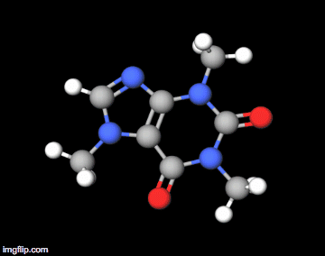
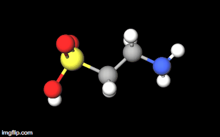
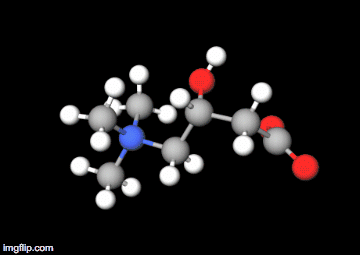
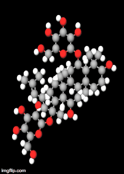
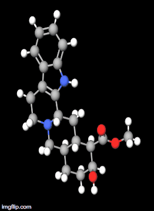
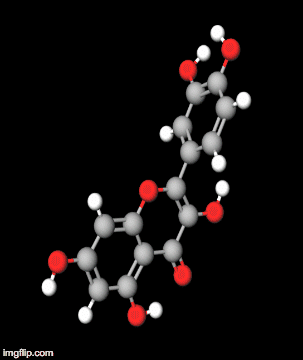

Chemicals & Compounds
Caffeine
The benefits of caffeine are increase exercise endurance, heightened cognition and mood when tired or sleep deprived
The negatives of caffeine include irritability, anxiety, insomnia, tachycardia, palpitations, upset stomach, vomiting, abdominal pain, rigidity, hypokalemia, altered consciousness, paralysis, hallucinations, increased intracranial pressure, cerebral edema (swelling in the brain), seizures, rhabdomyolysis (breakdown of skeletal muscle), supraventricular and ventricular tachyarrhythmias (increased heart rate).

Guarana
Benefits include stimulant and weight loss (other benefits associated with caffeine)
Negatives include those of caffeine as guarana is a more concentrated version of the caffeine molecule
Taurine
Some positives are the promotion of eye and biliary (relating to the bile duct) health
The compound is safe according to the FDA; however, excessive taurine can cause low blood pressure

L-Carnitine
L-Carnitine does promote fat metabolism and increase endurance
However, some side effects include nausea, vomiting, abdominal pain, and diarrhea. In addition, the substance has been reported to cause seizures in patients with no known disease and increases in seizure frequency in patients with seizure disorder

Ginseng
A pro is that physical performance does improve
Reported symptoms of ginseng toxicity include diarrhea, vaginal bleeding, headache, vertigo, mania, hypertension, rashes, insomnia, irritability, Stevens-Johnson syndrome (a skin disorder), and agranulocytosis (a condition with a decreased white blood cell count); however, some of these symptoms may be related to contaminants, such as phenylbutazone and aminopyrine (used in the processing of ginseng).

(Ginsenoside RG1: a major component of the American Ginseng plant)
Yohimbine
Increases in energy, metabolism, and stamina are all effects of yohimbine. The compound also promotes well being of patients.
Yohimbine can cause hypertension at usual doses and hypotension at high doses. Other symptoms include tachycardia (increased heart rate) and death.

Gingko biloba
The positives of the ginkgo plant are said to include treatment for blood disorders and memory problems, enhancement of cardiovascular function and to improve eye health.
Possible side effects are nausea, diarrhea, dizziness, headaches, stomach aches, restlessness, and vomiting.
